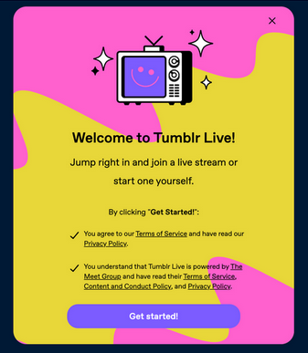

Privacy Policy Deep Dive: Tumblr Live
Or, how I learnt to stop worrying and love the cyber dystopia
If you were a teenage emo or nerd in the early to mid 2010s, you almost certainly used Tumblr - a blogging platform with a small user base compared to the social media heavy hitters, but popular due to being less image-focused than Instagram and TikTok, more long-form than Twitter, and not Facebook just in general.
Recently, it has implemented a feature called Tumblr Live, following in the footsteps of the likes of Facebook Live, Instagram Live, and Twitter Live (all of which do exactly what they say on the tin). This has been a controversial update, not least because of the fact you cannot turn this feature off, only “snooze” it for 7 days, after which it will pop right back up again.
Well, I say “you”.
I mean “people located in the USA”.
Tumblr Live isn't available anywhere else in the world, specifically not Europe and even more specifically not the UK (relevant because I live here). Is this just a gradual rollout? It's very common for only a few users to receive features at a time, to ensure all the new parts work with the existing software. Or is it, as the old saying goes, not available in Europe because it's such an incredible breach of GDPR that you might as well hand over your bank details right now to that nice Nigerian prince emailing you.
Make your guesses now.
Getting started

When opening Tumblr Live, this popup is the first thing you're greeted by.
Or at least, that's what the FAQ says. Again, not available outside the US.
The logical place to start here is Tumblr's own Privacy Policy. Well, the US one - there’s a separate one for the EU and UK, which is already a bit of a red flag and we haven’t even opened anything yet.
I'm not going to go through the entire policy in detail, because this blog is focusing on Tumblr Live rather than the social media platform in general. They gather all sorts of data on you (see the list below) for analysing, making changes to the service, giving to the police if they ask, and, of course, targeted advertising.
Thanks to laws in California, Colorado, Connecticut, Utah, and Virginia, they even provide a list of all the data they collect! Honestly, it's nothing too unsurprising from a social media site, and at least they don’t track you across different sites too.
My god but the bar is on the floor.
Here's the list:
![Summary of Information We Collect. In the last 12 months, we collected the following categories of personal information (as those terms are defined by applicable law). Identifiers (such as username and email address); Commercial information (such as transaction data); Financial data (such as credit card and other financial account information); Internet or other network or device activity (such as unique identifiers, browsing history or other usage data); Geolocation information (general location); Inference data about you; Legally protected classifications (such as gender); Physical characteristics or description (such as when you voluntarily submit a photo); Or other information that identifies or can be reasonably associated with you.](../../_assets/images/Tumblr-Live/tumblrDataCollected.jpg)
Personally, I'm a fan of the line “Inference data about you”, because that tells us a grand total of nowt all about what they actually collect, and also because it serves to reaffirm the fact that we can literally never win.
And, speaking of never winning, Tumblr takes the time to assure us that (and I quote) they “try to work only with those Third Party Services that share [their] respect for your privacy”.
So, surely, everything will be fine from here on out.
The Meet Group?
The Meet Group are a livestreaming video provider, who have their own video apps, as well as various business partners who use their services. Their Privacy Policy linked on their site refers to MeetMe, a service owned and operated by them, but despite this is, as far as I can tell, used as the Meet Group's general Privacy Policy.
We'll start with what data they collect!
![Categories of Information We Collect When You Use Our Website and App: Email Address And Phone Number. We may require a valid email address or phone number to register for our Service. This email will be stored in our servers while you have an account with any of our Services. We will use this email address to contact you, but you may opt out of promotional email contact in the Settings tab. We may use your phone number to verify your account, but will generally not otherwise contact you by phone. Profile Information You Provide. We collect the personal information that you provide to create your profile on our Service, including any metadata (such as location where a photo you upload was taken). Automatically Collected Device Information. We receive and record information from your device or browser, including your mobile device identification (AdID (Google), IDFA (Apple), device ID, etc.), IP address, cookie and beacon information, and geographic location. We collect information from and about the computers, phones, and other web-connected devices you use that integrate with our Services, and we combine this information across different devices you use. Unless you have disabled location collection at the device level, we will continue to collect location information even if you have opted out of sharing location information on your profile. Activity and Usage Information Including Your Content We collect information about the features you use, the pages and screens you visit, and your transactions with us and with our partners and vendors, including information about your use of products or features offered through our Service. We and certain third-party partners may access your private chats and postings in order to improve your experience on our Service, for content moderation, for safety and legal process purposes. Third Party Platform Registration (such as Facebook, Apple App Store or Google Play Store). When you download or register for our Service by or through a third party platform we may also access and/or collect certain information from your third party platform account or by cookies placed on your device by such third party site. For example, if you create your account on our Service using Facebook, we may use the following information from Facebook to establish your account: your email address, hometown, gender, profile photo, date of birth, friends list and userID. In addition, in the course of providing our Service on third party platforms, such as the Apple App Store or the Google Play Store, the platforms may collect information about you or receive information from us in order for that platform to provide and analyze their services. Please note that these platforms are developed and administered by people or companies not affiliated with us or any of our Services and that we are not responsible for the actions of those people or companies. You should carefully review the terms of service and privacy policies of the platforms that you use to access our Service. Advertisers. Advertising revenue helps us to support and improve our Services. Third party advertising companies may collect information using cookies, AdID, IDFA and other sources. Advertisers may use these and other sources in connection with our Service in order to collect and use data regarding advertisement performance and your interests for the purpose of delivering relevant advertising. To view a list of our current main ad partners, click here. Partners are 33Across, AdColony, Adview, AppLovin, AppNexus, Chartboost, Cheetah Mobile, Chocolate, Cox Media, EMX Digital, Exponential, Facebook Audience Network, Fyber, Google, Groundtruth, Harren Media, Hooked Media, HyperMX, Index Exchange, InMobi, ironSource, Kiip, Liftoff, Live Intent, LKQD, MobFox, Mobile Fuse, Mobvista, MoPub, Oath, OpenX, PubNative, PulsePoint, RhythmOne, Rubicon, Smaato, Sonobi, Sovrn, StartApp, Streamkey, Sublime Skinz, Taboola, TapJoy, Unity, Verve, Viant, Vungle, Woobi, YouAppi, Zedo and zPlay. Biometric Information Collected with Your Consent for Limited Purposes. We do not generally collect biometric information from users. However, in certain circumstances, we may ask you to consent to our processing biometric information and identifiers to fight fraudulent accounts (including bots) and other misuse of our Services, to increase the safety and integrity of the Services, and as described here. We may also collect information about you from other sources, such as other services and other users of our Service.](../../_assets/images/Tumblr-Live/meetGroupData.jpg)
Oh Jesus that's a lot of words.
Most of the key parts are in bold. Some non-bold key parts are how, if you sign in to MeetMe with Facebook, they will use your email address, hometown, gender, profile photo, date of birth, friends list and userID from it. They will also collect information about location on a device level, even if you've switched off sharing location on your MeetMe profile!
Something else to point out is the bit about “biometric data”, right near the bottom. MeetMe wants this to verify your account - an entirely optional action, it must be said. Now, this information isn’t sold or used for marketing purposes, and will usually be deleted after 30 days, but it will be transferred if another business buys the Meet Group, or if law enforcement asks for it.
I do not want any of those groups to have my biometric data.
Speaking of non-marketing data, biometrics is not the only one they won’t sell. It’s on a (pretty short) with exact date of birth, first and last name, address, phone number, and email.
Everything else, though, is fair game.
Lots of the uses are similar to Tumblr (and… the internet at large). Targeted adverts run by others, contacting you, and marketing for MeetMe's own ad campaigns. Other uses include, but are definitely not limited to, development & testing, customising user experience, research, managing the company, and a fun little thing they call “profile display and sharing”.
None of this, despite my earlier joke, infringes on GDPR. They actually have an entire section dedicated to European Economic Area residents detailing how to exert the rights GDPR gives you with regards to the data they’ve collected on you.
Holy law-abiding corporation, Batman!
What they mean by this “profile display” is neatly summed up below:
![When you create a profile on MeetMe, your personal information may be visible also to users of Skout, and may be visible to users of other applications we own (such as Flurv, Boy Ahoy and others) or with which we may partner. You may opt out of this feature for your profile in your Settings tab. Similarly, when you use the Live tab, you may be visible to users of other applications we own (such as Flurv, Boy Ahoy and others) or with which we may partner. For a list of our current Live partners, click here (link not openend). You may not opt out of this feature if you choose to use Live.](../../_assets/images/Tumblr-Live/profileDisplay.jpg)
Their current partners are Skout (another live video provider), and Plenty of Fish, Zoosk, Chispa, and Badoo (all dating sites/apps). Flurv, an app owned by the Meet Group, is a social network designed to find people in your local area, and Boy Ahoy is the same but aimed at gay men.
This paragraph translates to “we will show your information, and the fact you're streaming live, to users of all of these entirely unrelated apps, oh!, and you can't turn it off”
Now, personally, I don't want my hypothetical personal information and livestream to be shown to the users of a whole bunch of random dating apps, but maybe that's just me.
Not illegal, but I don't like it.
In conclusion
I can safely say that nothing I've read has filled me with any sort of love towards Tumblr Live. Granted, I haven't looked at any other streaming sites - but something tells me that having your profile broadcast out to the users of dating sites owned by the same company is not not for the course.
So maybe if you truly want to do a live performance to a bunch of strangers, save yourself some trouble and find a local open-mic night.